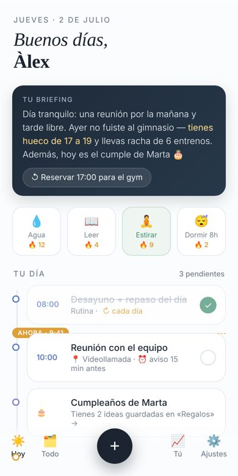
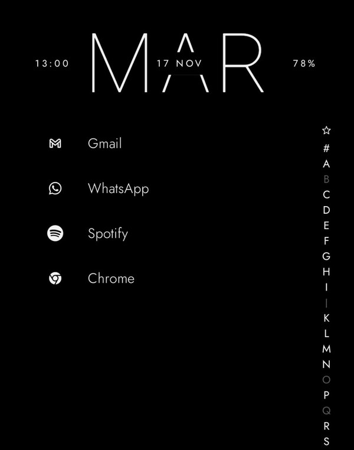
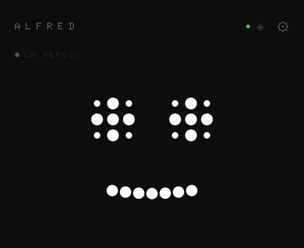
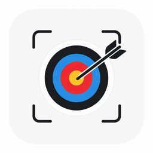
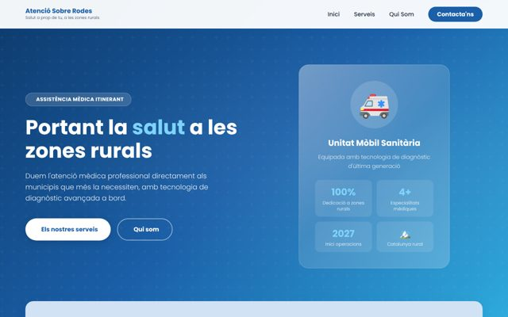

Disponible para prácticas remuneradas o primer empleo
MaxPadulo
Andorrano, estudio en Barcelona. Hago apps móviles, webs y juegos, y aprendo rápido lo que el proyecto pida.
Pruébalo
Esto es el intérprete de Diaria, mi app de agenda. Lo escribí yo y funciona sin conexión. Escribe un plan como se lo dirías a un amigo.
Proyectos
DiariaAgenda todo en uno: eventos, tareas, notas, hábitos y deporte en una sola vista, con captura en lenguaje natural.App móvil

Fase final, con APK de producción
- Intérprete propio de español: «pádel cada jueves 19h con Marc» se convierte en un evento recurrente sin rellenar formularios.
- Funciona 100 % sin conexión: los datos viven en el móvil, en SQLite.
- Recurrencias, alarmas en tres niveles, hábitos con rachas y un resumen diario generado en el propio dispositivo.
- Más de 200 tests, arquitectura documentada y desarrollo por fases hasta la build de producción.
React Native, Expo, TypeScript, SQLite, Zustand, Jest
Mi LauncherPantalla de inicio minimalista para Android, pensada para usarse con una mano: líneas finas y negro puro para pantallas OLED.Launcher Android

En uso diario, código público
- Reloj tipográfico: el día en letras enormes, cruzado por una línea con la hora, la fecha y el siguiente evento del calendario.
- Columna A–Z con efecto de onda: las letras se apartan y crecen al pasar el dedo, con respuesta háptica y rebote elástico al soltar.
- Notificaciones y música integradas en la propia lista de apps, y un panel de notas que aloja el widget de Google Keep.
- Hecho con Jetpack Compose: iconos dibujados en Canvas, animaciones con muelles y un solo ViewModel con StateFlow.
Kotlin, Jetpack Compose, Material 3, AppWidgetHost, MediaSession
AlfredAsistente de voz para Android con IA híbrida: Gemini en la nube y Gemma ejecutándose en el propio móvil.IA híbrida

En desarrollo
- Responde con Gemini cuando hay conexión y salta a Gemma, en local, si no hay internet o se agota la cuota.
- Conversación por voz, con reconocimiento y síntesis en español.
- Herramientas propias: consultar el tiempo, lanzar acciones del sistema y abrir apps.
Kotlin, Jetpack Compose, Gemini API, Gemma, MediaPipe
FastBowApp de tiro con arco que puntúa las flechas de una diana a partir de una foto, con un modelo de visión en el móvil.Visión artificial

En desarrollo, con la detección en integración
- Detección de flechas con un modelo YOLOv11 Nano ejecutado con ONNX Runtime.
- Corrección manual de cada puntuación con un toque; fichas por serie, historial y estadísticas.
- Modalidades Indoor 18 y 25 m, Outdoor, Campo y personalizada, todo sin conexión.
React Native, Expo, TypeScript, ONNX Runtime, YOLOv11
Atenció sobre RodesWeb de un servicio de atención sanitaria móvil para zonas rurales.Web

Proyecto de clase, lista para desplegar
- Web informativa en catalán: servicios, equipo y contacto.
- Diseño adaptable a móvil, preparada para desplegarse como web estática.
HTML, CSS, JavaScript
El Templo de Anubis
Mi primer portfolio era un videojuego, y sigue aquí. Son 14 juegos hechos a mano con HTML, CSS y JavaScript, sin librerías ni motores.
- Ajedrez contra un motor propio, con tres dificultades.
- El juicio de las almas: encuentra el fallo en código real de 7 lenguajes.
- Música y efectos generados por código, logros y partidas guardadas.
Sobre mí
Soy Max Padulo Santamaria, programador full stack. Soy andorrano y ahora vivo y estudio en Barcelona.
Me formé en el bachillerato profesional de desarrollo de aplicaciones, donde obtuve el Premio Nacional al Estudio. Después hice un bootcamp full stack en 4Geeks Academy y ahora curso el Grado Superior de DAM.
Me interesa sobre todo la inteligencia artificial y los usos reales que se le pueden dar. Me gustan los retos: cuanto más difícil es el problema, más ganas tengo de resolverlo.
Premio Nacional al Estudio
Gobierno de Andorra, Bachillerato Profesional, curso 2023-24. Reconoce los mejores expedientes académicos del país. El mío: 9,44.
Ver la noticia oficialFormación
- En cursoGrado Superior en Desarrollo de Aplicaciones Multiplataforma (DAM)Salesians de Sarrià, Barcelona
- 2025Bootcamp Full Stack Developer4Geeks Academy
- Hasta 2024Bachillerato Profesional: Técnico de Soporte en Desarrollo de Aplicaciones MultiplataformaCentre de Formació Professional d'Aixovall, Andorra. Premio Nacional al Estudio.
Experiencia
- Universidad de AndorraEstancia formativa como técnico
- Hospital de AndorraEstancia formativa como técnico
Habilidades
- Catalán, lengua materna
- Castellano, lengua materna
- Francés, lengua paterna
- Inglés, comprensión media y conversación básica
¿Hablamos?
Busco prácticas remuneradas o un primer empleo como programador. Escríbeme y te contesto pronto.